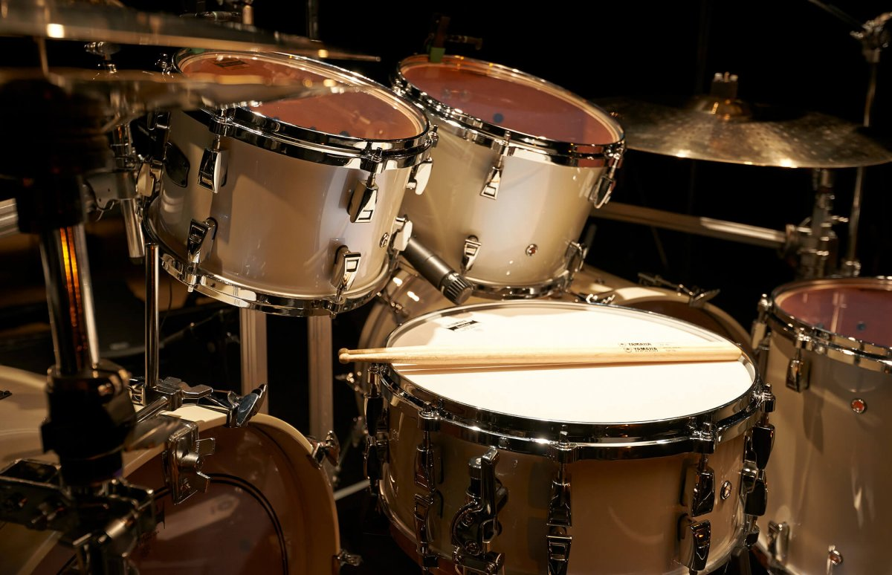

Мое хобби - ударные и ещё....!

Здравствуйте! Хотелось бы рассказать об одном из своих увлеченнии таком как игре на ударных инструментах.)))
Самое интересное игрой на ударных инструментах начал увлекаться совсем не давно, буквально пару лет, но понял для себя, что это моя отдушина.... Музыкой я заряжаю себя позитивом и настроением!
А так же в моей жизни присутствует: Спорт, Путешествия, и конечно же увлекаюсь Программированием которое поможет реализовать мои планы. В целом мне нравиться расширять свой кругозор и заниматься самообразованием.
В данный момент изучаю курс Fullstack разработчик на Python!